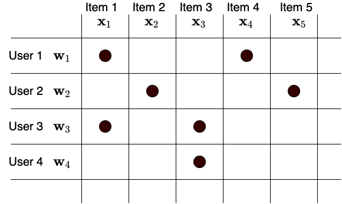

Matrix Factorization¶
Giới thiệu¶
Các hệ thống gợi ý dựa trên nội dung (content-based) ít được sử dụng vì những hạn chế của nó trong việc liên kết những thông tin tương tự giữa người dùng. Nhóm thuật toán thứ hai là Lọc cộng tác (collarborative filtering) được sử dụng rộng rãi hơn. Trong các thuật toán thuộc nhóm thứ hai này, Matrix Factorization (phân tích ma trận) là thuật toán đơn giản nhất.
Trong hệ thống dựa trên nội dung ở mục trước, chúng ta sử dụng thể loại phim làm đặc trưng cho các sản phẩm và xây dựng một bộ hồi quy Ridge để mô hình hóa mỗi người dùng. Ở đó, ta giả sử mỗi hệ số trong mô hình người dùng tương ứng với việc anh ấy/cô ấy có thích thể loại tương ứng không. Ta thấy rằng các vector đặc trưng của sản phẩm phụ thuộc vào dữ liệu có trước của những thể loại cụ thể. Xét một bài toán bất kỳ mà ta không hề có thông tin về “thể loại” của các sản phẩm mà chỉ biết mức độ tương tác giữa người dùng và sản phẩm, khi đó các vector đặc trưng cho sản phẩm nên được xây dựng thế nào.
Câu trả lời là chúng ta hoàn toàn có thể “học” được các vector đặc trưng cho mỗi sản phẩm mà chỉ dựa trên tương tác giữa các sản phẩm và người dùng. Ngay cả khi không có thông tin về thể loại của sản phẩm, ta vẫn có thể giả sử rằng có \(K\)” thể loại” nào đó mà mỗi sản phẩm thuộc vào. Các “thể loại” này không nhất thiết phải rõ ràng như Comedy hay Drama mà có thể không tường minh. Khi có vector đặc trưng \(\mathbf{x} \in \mathbb{R}^K\) cho một sản phẩm, ta có thể xây dựng các vector đặc trưng tương ứng cho mỗi người dùng. Mỗi thành phần trong vector đặc trưng đó vẫn thể hiện độ yêu thích của người dùng tới “thể loại” đó. Nếu một sản phẩm có hệ số tương ứng với một thể loại cao và một người dùng cũng có hệ số tương ứng với thể loại đó cao thì mức độ yêu thích của người dùng đó tới sản phẩm đó cũng cao.
Xây dựng mô hình¶
Như vậy, với một người dùng \(i\) và sản phẩm \(j\) với vector đặc trưng tương ứng lần lượt là \(\mathbf{w}_i\) và \(\mathbf{x}_j\), độ yêu thích của người dùng tới sản phẩm đó có thể được mô tả bởi: $\( \hat{y}_{ij} \approx \mathbf{w}_i^T \mathbf{x}_j + b_i + d_j + a (1) \)$
với sai khác bởi một vài hệ số tự do \(b_i, d_j, a\). Ở đây \(b_i\) là hệ số tự do ứng với người dùng \(i\) thể hiện việc người này có “khó tính” hay không; \(d_j\) là hệ số tự do ứng với sản phẩm \(j\) thể hiện việc sản phẩm có phổ biến hay không; và hệ số tự do \(a\) thể hiện thiên hướng chung của bộ dữ liệu.
Với bài toán hồi quy (dự đoán số sao đánh giá), ta có thể trực tiếp sử dụng đại lượng (1) để xấp xỉ giá trị cần dự đoán. Với bài toán phân loại nhị phân (dự đoán xem người dùng có mua hàng hay không), ta có thể sử dụng thêm một hàm sigmoid để đưa ra dự đoán xác suất.
Ta có thể tạm bỏ qua các hệ số tự do này và quan tâm tới đại lượng \(\mathbf{w}_i^T \mathbf{x}_j\).

Giả sử có \(N\) người dùng và \(M\) sản phẩm. Đặt \(\mathbf{W} \in \mathbb{R}^{K\times N}\) và \(\mathbf{X} \in \mathbb{R}^{K \times M}\) lần lượt là ma trận đặc trưng của người dùng và sản phẩm. Khi đó, ma trận utility \(\mathbf{Y} \in \mathbb{R}^{M\times N}\) có thể được xấp xỉ bởi: $\( \mathbf{Y} \approx \mathbf{W}^T\mathbf{X} \)$
Việc xấp xỉ ma trận Utility bởi tích của hai ma trận \(\mathbf{W}\) và \(\mathbf{X}\) còn được gọi là Matrix Factorization (phân tích ma trận). Kích thước của đặc trưng, \(K\), thường là một số nhỏ hơn số lượng người dùng và sản phẩm rất nhiều để giảm lượng tính toán và bộ nhớ. Ngoài ra, việc chọn \(K\) nhỏ cũng giúp tránh overfitting.
Hàm mất mát và Huấn luyện mô hình¶
Mô hình phân tích ma trận này hoàn toàn có thể được tối ưu bằng Gradient Descent. Tại mỗi điểm dữ liệu \((i, j, y_{ij})\) tương ứng với (người dùng, sản phẩm, mức độ quan tâm), ta cần tính giá trị ước lượng \(\hat{y}_{ij}\) như trong công thức (1) rồi xây dựng hàm mất mát cho điểm dự liệu này dựa trên giá trị thực tế \(y_{ij}\) và giá trị dự đoán \(\hat{y}_{ij}\). Tùy vào từng bài toán mà hàm mát có thể được xây dựng một cách khác nhau.
Với bài toán hồi quy, ta có thể sử dụng hàm mất mát đơn giản là bình phương sai số \((y_{ij} - \hat{y}_{ij})^2\).
Với bài toán phân loại nhị phân, ta có thể đưa \(\hat{y}_{ij}\) qua hàm sigmoid rồi sử dụng hàm mất mát tương tự như hồi quy logistic.
Các vector \(\mathbf{w}_i\) và \(\mathbf{x}_j\) có thể được cập nhật dựa trên gradient của các hàm mất mát này. Chúng ta sẽ không đi sâu vào việc tính gradient mà nhường việc đó cho các thư viện deep learning (pytorch trong bài viết này).
Triển khai mô hình¶
Trong mục này, chúng ta tiếp tục lấy tập dữ liệu Movielens-1M làm ví dụ. Đây có thể coi là một bài toán hồi quy với hàm mất mát trung bình bình phương lỗi MSE.
Trước tiên, ta khai báo các thư viện và đặt seed cho các thành phần ngẫu nhiên.
import numpy as np
import pandas as pd
import pytorch_lightning as pl
from sklearn.model_selection import train_test_split
import torch
from torch import nn
import torch.multiprocessing
import torch.nn.functional as F
from torch.utils.data import DataLoader, Dataset
import tabml.datasets
GLOBAL_SEED = 42 # number of life
torch.manual_seed(GLOBAL_SEED)
np.random.seed(GLOBAL_SEED)
Tải và phân chia dữ liệu¶
Tiếp theo, ta tải và phân chia dữ liệu giống như đã làm trong mục content based (TODO cross ref). Dữ liệu cũng được chuẩn hóa về khoảng giá trị xung quanh 0 để dễ tối ưu.
df_dict = tabml.datasets.download_movielen_1m()
users, movies, ratings = df_dict["users"], df_dict["movies"], df_dict["ratings"]
ratings["Rating"] = ratings["Rating"] - 3 # rating range (-2, 2)
train_ratings, validation_ratings = train_test_split(ratings, test_size=0.1, random_state=GLOBAL_SEED)
Chuẩn bị tập dữ liệu cho Pytorch¶
Tiếp theo, ta chuẩn bị dữ liệu ở dạng torch.utils.data.DataLoader của Pytorch.
# TODO (format this cell)
# map movie id and user id to indexes.
movie_index_by_id = {id: idx for idx, id in enumerate(movies["MovieID"])}
user_index_by_id = {id: idx for idx, id in enumerate(users["UserID"])}
class MLDataset(Dataset):
def __init__(self, ratings: pd.DataFrame):
self.ratings = ratings
def __len__(self):
return len(self.ratings)
def __getitem__(self, index):
user_id = self.ratings["UserID"].iloc[index]
movie_id = self.ratings["MovieID"].iloc[index]
rating = self.ratings["Rating"].iloc[index]
user_index = user_index_by_id[user_id]
movie_index = movie_index_by_id[movie_id]
return user_index, movie_index, rating
training_data = MLDataset(train_ratings)
validation_data = MLDataset(validation_ratings)
batch_size = 1024
train_dataloader = DataLoader(
training_data, batch_size=batch_size, shuffle=True, num_workers=10
)
validation_dataloader = DataLoader(
validation_data, batch_size=batch_size, shuffle=False, num_workers=10
)
# inspect one example
for batch in train_dataloader:
print(batch)
break
Định nghĩa mô hình MatrixFactorization¶
Sau khi có dữ liệu, ta xây dựng mô hình MatrixFactorization dựa trên Pytorch Lightning.
Ta có thể sử dụng nn.Embdding để lưu các ma trận đặc trưng cho người dùng và sản phẩm. Việc sử dụng nn.Embedding là hợp lý vì tại mỗi bước cập nhật, ta chỉ cập nhật một lượng nhỏ các hàng/cột của hai ma trận đặc trưng này tương ứng với các điểm dữ liệu trong mỗi batch. Thực tế, kết quả sau khi huấn luyện mô hình cũng cho ta những ma trận có tính chất tương tự như ma trận embdding. Ta cũng có thể sử dụng các embedding thu được này vào các bài toán khác.
Ta dùng một bố tối ưu đơn giản ở đây là Stochastic Gradient Descent.
import jdc
LR = 1
WEIGHT_DECAY = 5e-5
class MatrixFactorization(pl.LightningModule):
"""Pytorch lighting class for Matrix Factorization training.
Attributes:
n_users: number of users.
n_items: number of items.
n_factors: number of latent factors (or embedding size)
"""
def __init__(self, n_users: int, n_items: int, n_factors: int = 40):
super().__init__()
self.n_users = n_users
self.n_items = n_items
self.n_factors = n_factors
self.user_biases = nn.Embedding(n_users, 1)
self.item_biases = nn.Embedding(n_items, 1)
self.bias = nn.Parameter(data=torch.rand(1))
self.user_embeddings = nn.Embedding(n_users, n_factors)
self.item_embeddings = nn.Embedding(n_items, n_factors)
def forward(self, users, items):
"""
Forward pass through the model. For a single user and item, this
looks like:
bias + user_bias + item_bias + user_embeddings.dot(item_embeddings)
Arguments:
users: Array of user indices
items : Array of item indices
Returns:
preds: Predicted ratings.
"""
# select users and items from the batch
batch_user_embs = self.user_embeddings(users)
batch_item_embs = self.item_embeddings(items)
preds = torch.reshape(
torch.diag(torch.matmul(batch_user_embs, torch.transpose(batch_item_embs, 0, 1))),
(-1, 1),
)
# add bias
preds += self.user_biases(users) + self.item_biases(items) + self.bias
return torch.clip(preds.squeeze(), min=-2, max=2)
def training_step(self, batch, batch_idx):
users, items, rating = batch
rating = rating.to(torch.float32)
output = self.forward(users, items)
loss = F.mse_loss(rating, output)
self.log("batch_loss", loss)
return {"loss": loss} # for computing avg_loss in training_epoch_end
def configure_optimizers(self):
optimizer = torch.optim.SGD(self.parameters(), lr=LR, weight_decay=WEIGHT_DECAY)
return optimizer
Code cell dưới đây giúp hiện thị quá trình huấn luyện trên tensorboard. Nếu muốn xem quá trình huấn luyện trên tensorboard, bạn đọc có thể chạy notebook này rồi chạy câu lệnh sau từ cửa sổ dòng lệnh:
tensorboard --logdir mf_tb_logs/ --port 6007
TODO(hide cell)
%%add_to MatrixFactorization
def validation_step(self, batch, batch_idx):
users, items, rating = batch
rating = rating.to(torch.float32)
output = self.forward(users, items)
loss = F.mse_loss(rating, output)
self.log("batch_loss", loss)
return {"loss": loss} # for computing avg_loss in training_epoch_end
def training_epoch_end(self, outputs):
avg_loss = torch.stack([x["loss"] for x in outputs]).mean()
self.logger.experiment.add_scalars(
"Loss", {"Train": avg_loss}, self.current_epoch
)
self.logger.experiment.add_scalars(
"RMSE", {"Train": avg_loss ** 0.5}, self.current_epoch
)
epoch_dict = {"loss": avg_loss}
def validation_epoch_end(self, outputs):
avg_loss = torch.stack([x["loss"] for x in outputs]).mean()
self.logger.experiment.add_scalars(
"Loss", {"Val": avg_loss}, self.current_epoch
)
self.logger.experiment.add_scalars(
"RMSE", {"Val": avg_loss ** 0.5}, self.current_epoch
)
epoch_dict = {"loss": avg_loss}
Huấn luyện mô hình¶
Ta chọn số chiều cho embedding là 40, số epoch là 100 và huấn luyện mô hình.
# for tensorboard
from pytorch_lightning.loggers import TensorBoardLogger
logger = TensorBoardLogger("mf_tb_logs", name=f"lr{LR}_wd{WEIGHT_DECAY}")
n_users = len(user_index_by_id)
n_movies = len(movie_index_by_id)
n_factors = 40
model = MatrixFactorization(n_users=n_users, n_items=n_movies, n_factors=n_factors)
trainer = pl.Trainer(gpus=1, max_epochs=100, logger=logger)
trainer.fit(model, train_dataloader, validation_dataloader)
Đánh giá mô hình¶
Cuối cùng, ta đánh giá mô hình thu được trên tập huấn luyện và tập kiểm thử.
def eval_model(model, train_dataloader):
loss = 0
for users, items, rating in train_dataloader:
pred = model(users, items)
loss += F.mse_loss(pred, rating)
RMSE = (loss / len(train_dataloader))**.5
return RMSE
print("Train RMSE: {:.3f}".format(eval_model(model, train_dataloader)))
print("Validation RMSE: {:.3f}".format(eval_model(model, validation_dataloader)))
Kết quả thu được đã tốt hơn so với hệ thống dựa trên nội dung.
Tóm tắt và Thảo luận¶
Matrix Factorization là một phương pháp gợi ý dạng lọc cộng tác, ở đó mỗi người dùng và sản phẩm được mổ tả bởi một embedding vector và độ quan tâm của người dùng đến sản phẩm được mô hình bằng tích vô hướng của hai embedding vector tương ứng cộng với các hệ số tự do. Phương pháp này tỏ ra hiệu quả hơn khi chỉ dựa trên nội dung của sản phẩm vì nó sử dụng thêm thông tin về hành vi của những người dùng tương tự. Phương pháp này có những ưu điểm và nhược điểm như sau:
Ưu điểm¶
Không cần sử dụng thêm thông tin gì về người dùng và sản phẩm ngoài việc biết được những sản phẩm mà người dùng thích (hoặc không thích). Điều này phù hợp với việc xây dựng một giải pháp nền (baseline) khi hệ thống chưa có nhiều dữ liệu.
Việc không sử dụng các thông tin phụ giúp các kỹ sư xây dựng được hệ thống mà chưa cần nhiều về kiến thức miền liên quan đến mô hình kinh doanh.
Nhược điểm¶
Không giải quyết được vấn đề khởi đầu lạnh với những người dùng mới chưa đánh giá sản phẩm nào hoặc những sản phẩm mới chưa được người dùng nào đánh giá. Việc này có thể hạn chế được phần nào bằng những cách sau:
Một khi người dùng có tương tác với một vài sản phẩm, ta có thể sử dụng các embedding vector của những sản phẩm đó để xây dựng embedding vector tương ứng với người dùng này mà không cần phải huấn luyện lại toàn bộ dữ liệu. Tương tự với việc xây dựng embedding vector cho sản phẩm mới.
Nếu ta có thông tin về nhóm của sản phẩm (từ cùng nhà sản xuất, cùng thể loại), ta có thể sử dụng vector trung bình của những sản phẩm khác trong cùng nhóm đó.
Việc không sử dụng thông tin ngoài khiến hệ thống hoạt động dưới khả năng khi có thêm nhiều thông tin về cả người dùng và sản phẩm. Những thông tin về người dùng như độ tuổi, giới tính, vị trí địa lý rất hữu ích trong việc kết nối người dùng với những sản phẩm tương ứng. Đồng thời, thông tin về loại sản phẩm, nguồn gốc xuất xứ cũng sẽ rất hữu ích.
Trong mục tiếp theo, chúng ta sẽ làm quen với một phương pháp ở đó những thông tin bổ sung của người dùng và sản phẩm sẽ được tích hợp vào quá trình huấn luyện để đạt được hiệu quả cao hơn.